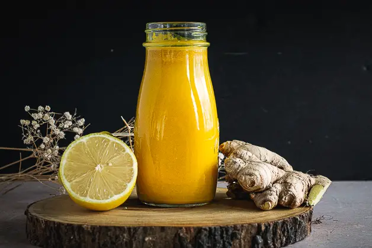

Home
Ginger Shot

Description
A refreshing ginger shot with a bite - perfect for cold season.
Ingredients
1 large rhizome of ginger, peeled and chopped into chunks
1⁄2 granny smith apple, peeled and sliced
1 whole lemon, juiced
honey
cinnamon
turmeric
ground black pepper
Preparation
Boil the ginger and apple togther with the spices for 15 minutes.
Remove and discard apple slices, and allow the contents of the pot to cool for 10 minutes.
Pour the contents through a strainer into a mixing bowl, ideally with a spout for easy pouring.
Use a large spoon to press the juice out of the ginger chunks in the strainer. Discard the remaining pulp.
Mix in the lemon juice and just enough honey to sweeten to taste.